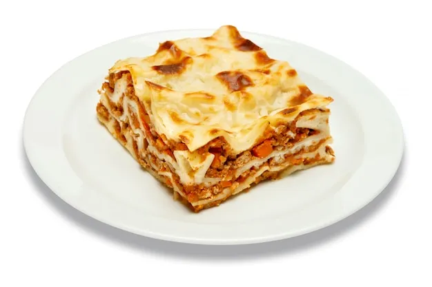

Lasagna

EASY, CLASSIC LASAGNA: STEP-BY-STEP PICTURES & INSTRUCTIONS
This is technically “short-cut lasagna.” If you want ‘real’ lasagna, the differences usually involve homemade sauce, ricotta instead of cottage cheese (and mixing an egg, parsley, salt), ‘real’ Parmesan cheese (not the dreaded green container!), plus that particular cook’s preferences.
Those who really go to town make their own noodles. But I admit, lasagna is probably going to always be a “short-cut” meal for me.
Ingredients
- 3/4 lb . lean ground beef
- 3/4 lb Italian sausage, hot
- oz ~36 . Prego spaghetti sauce
- 1 tsp . Italian seasoning
Steps
- Mise en place. Pre-heat oven to 350°. Brown beef and Italian sausage in a large pan. Drain of fat. With the Italian sausage, I usually press on it with a paper towel too.
- Add spaghetti sauce to pan. Add spices to pan. Stir well, and set on a very low simmer.
- Boil a large pot of water. Sprinkle in a little salt and a dash of olive oil. Drop lasagna into boiling water. Cook until not quite done. (It will cook more in the oven and stiffer pasta is easier to work with). Lay out pasta on large towel.
- Spray a large 9” x 13” pan with non-stick spray. (or grease very lightly).